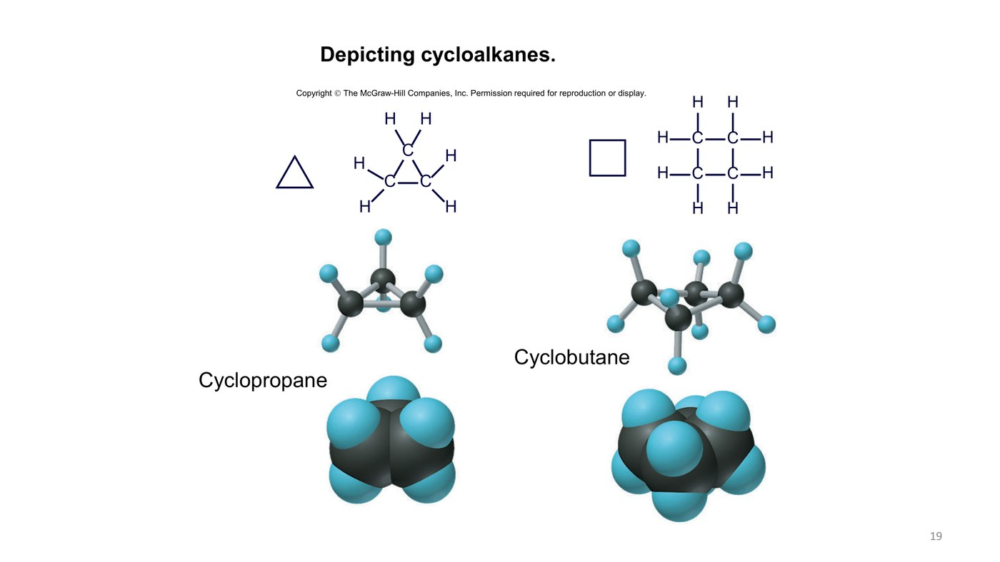
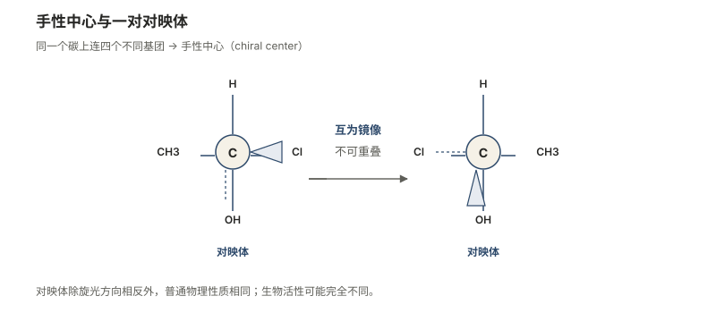

CHE105 · 第 2 章
有机分子的结构、命名与异构
Structure, Nomenclature & Isomerism
虚线下划线为术语；悬停查看中文、英文与释义，完整词典见“术语”。
本章目录
上一章把碳骨架画了出来，这一章给它起名字、分清同分异构，并第一次遇到"同样的原子、不同的空间朝向"——手性。命名与异构是有机化学的语法，后面每一章都要用。
本章要点
- 烷烃只含单键，通式 CnH2n+2，构成同系列，相邻成员相差一个 –CH2–。
- 命名三段式：PREFIX + ROOT + SUFFIX；词根由最长连续链的碳数决定，烷烃后缀为 –ane。
- 同一分子可用展开式、缩简式、碳骨架式、球棍模型、空间填充模型五种方式表示。
- 构造异构体分子式相同、原子连接方式不同，是不同化合物，性质不同。
- 连有四个不同基团的碳是手性中心；手性分子的两个光学异构体互为不能重叠的镜像。
- 光学异构体物理性质相同，只有对平面偏振光的旋转方向相反；化学性质只在手性环境中不同。
- 烯烃通式 CnH2n，双键限制旋转，产生顺反（geometric）异构。
- 炔烃通式 CnH2n-2；苯是芳香烃，π 电子离域，用共振杂化体表示。
2.1 烷烃与同系列
烃hydrocarbon是只含碳与氢的化合物。烷烃alkane是只含单键的烃，因此被称为饱和烃saturated hydrocarbon——"饱和"指的是每个碳的四根键都被氢或碳占满，没有余地再加原子。烷烃的通式是 CnH2n+2，n 为正整数。
把 n 依次取 1、2、3……得到的这一串化合物构成一个同系列homologous series：相邻两个成员在组成上恰好相差一个 –CH2–。同系列的存在是有机化学"化合物数量巨大但规律简单"的根源——只要掌握一个成员的命名与性质，其余成员可以类推。
烷烃是非极性分子，分子之间只有色散力dispersion force。讲义列出前十个直链烷烃的分子式、摩尔质量、结构与沸点，用来说明一件事：烷烃的物理性质（沸点、熔点、密度等）主要由色散力决定，而不是由极性相互作用决定。这一点与后面要讲的醇、胺形成鲜明对照——那些分子能形成氢键。
L1 p.39、p.49；L2 p.13、p.23
2.2 命名的三段式
任何有机化合物的名称都由三部分拼成：PREFIX + ROOT + SUFFIX（前缀 + 词根 + 后缀）。词根来自最长连续碳链上的碳数；每个前缀标识一个挂在主链上的基团以及它的位置；后缀标明化合物类别，写在词根之后。烷烃的后缀是 –ane。
词根本身就是一张 1 到 10 的表：meth-（1）、eth-（2）、prop-（3）、but-（4）、pent-（5）、hex-（6）、hept-（7）、oct-（8）、non-（9）、dec-（10）。这张表必须背到条件反射，因为后面所有官能团的命名都建立在它上面——把 –ane 换成 –ene 就是烯烃，换成 –ol 就是醇，换成 –one 就是酮。
讲义另附了一份词根记忆法，用日常词汇做锚点：meth- 想成 meter（米，基本单位，对应 1 个碳）；eth- 想成 ethics（伦理，常在两条路之间做选择，对应 2）；prop- 想成三根支柱（prop 1、2、3，对应 3）；but- 想成"黄油汽车"的四个轮子（buttery，对应 4）；pent- 想成五根手指或五边形（pentagon，对应 5）；hex- 想成六边形的六条边（hexagon，对应 6）；hept- 想成七天一周或七项全能（heptathlon，对应 7）；oct- 想成章鱼八条腕（octopus，对应 8）；non- 想成猫的九条命（nine lives，对应 9）；dec- 想成十根手指或十年（decade，对应 10）。
L1 p.40–41；Memory Tricks for Carbon Roots 1–10 p.3–12
2.3 命名规则与四个范例
把三段式落到操作上，是四条规则。第一，找出最长连续链作为母体，母体决定词根。第二，从靠近第一个取代基的一端开始编号——注意是"第一个取代基"，不是"取代基更多的一端"。第三，把取代基按"位置-名称"列出，同种取代基用 di-、tri- 合并，位置之间用逗号隔开、位置与名称之间用连字符。第四，取代基按字母顺序排列，与位置编号的大小无关。
讲义反复使用的范例是 3-ethyl-2-methylhexane：主链 6 个碳（hexane），2 位有一个甲基，3 位有一个乙基。这里乙基写在甲基之前，正是字母序（ethyl 在 methyl 前）的体现；编号从靠近甲基的一端开始，因为那样第一个取代基在 2 位，比从另一端编号得到的 3 位更小。
再看三个例子。2,2-二甲基丁烷：结构为 (CH3)3C–CH2–CH3，最长链 4 个碳，2 号碳上挂着两个甲基，两个甲基合起来用 dimethyl，位置重复写两次。3,4-二甲基己烷：主链 6 个碳，甲基在 3、4 两位；从两端编号结果相同，说明分子对称。1-乙基-2-甲基环戊烷：母体是五元环（cyclopentane），环上 1 位乙基、2 位甲基；环状化合物编号时让取代基位次尽可能小，并按字母序决定谁拿 1 位。
L1 p.42–44、p.63–65；L2 p.16–18、p.37–39
2.4 五种画法与环烷烃
同一个分子可以有五种长相，讲义以 3-ethyl-2-methylhexane 为例并列展示：展开式expanded formula画出每一根键、写出每一个原子；缩简式condensed formula把 CH3、CH2 等基团连写成一串；碳骨架式carbon-skeleton formula只画碳骨架，氢全部省略；球棍模型ball-and-stick model用球表示原子、棍表示键，能看出键角；空间填充模型space-filling model按原子实际大小画，能看出分子的真实外形与体积。
五种画法各有用途：展开式适合数键、查价；缩简式适合快速书写；骨架式是做机理题时的标准写法；球棍模型用来理解构型；空间填充模型用来判断两个基团在空间上是否真的挤在一起。考试写机理用骨架式，判断位阻用空间填充式的直觉。
环烷烃的画法就是在骨架式上闭合成环。讲义给出四个基本环：环丙烷（cyclopropane，三元环）、环丁烷（cyclobutane，四元环）、环戊烷（cyclopentane，五元环）、环己烷（cyclohexane，六元环）。环状结构的通式比开链烷烃少两个氢（CnH2n），因为成环用掉了两个"链端"。

Clean vector instructional plate showing the same alkane 3-ethyl-2-methylhexane drawn five ways in a row: expanded formula with every C and H and every bond drawn, condensed formula as a line of CH3 and CH2 groups, carbon-skeleton formula as a zigzag line with a branch, ball-and-stick model, and space-filling model. Each panel is labeled underneath with its representation name. Flat 2D, thin 1.5 px strokes, muted slate blue and warm grey palette, white background, English labels, no cartoon, no gradient, no shadow, no 3D perspective except in the two model panels.
L1 p.44–46；L2 p.18–20
2.5 构造异构：分子式相同，连接不同
构造异构体constitutional isomer（也叫结构异构体，structural isomer）指分子式相同但原子连接方式不同的化合物。直链烷烃往往有许多带支链的构造异构体，碳数越多，数目增长得越快。
以 C4H10 为例，只有两种：直链的丁烷（butane）与带一个支链的 2-甲基丙烷（2-methylpropane）。C5H12 有三种：直链的戊烷（pentane）、一个支链的 2-甲基丁烷（2-methylbutane）、两个支链同碳的 2,2-二甲基丙烷（2,2-dimethylpropane）。这三个名字本身就在提示枚举方法：先长链、再短链、支链由聚到散。
构造异构体是不同的化合物，因此有不同的物理性质——讲义用 C4H10 与 C5H12 的各组异构体说明这一点：分子式相同，沸点、熔点、密度却各不相同。但如果异构体含有相同的官能团，它们的化学性质仍然相似，因为决定反应性的是官能团，而不是碳骨架的形状。
L1 p.47–49；L2 p.21–23
2.6 手性中心与光学异构
比构造异构更微妙的一层是立体异构stereoisomer：原子的连接顺序相同，但基团在空间中的朝向不同。其中最重要的一类是光学异构体optical isomer——互为镜像、却无法重叠的一对分子。
一个分子要能成对存在为光学异构体，必须本身不对称；这种不对称的分子被称为手性chiral分子。判断手性最实用的操作标准是找手性中心chiral center：如果一个碳原子连着四个互不相同的基团，它就是手性中心。讲义用 3-甲基己烷与丙氨酸（alanine）作为例子——前者在 3 号碳上连了 H、CH3、C2H5 与 C3H7 四条不同的链，后者在 α 碳上连了 H、CH3、NH2 与 COOH。
判断时要特别小心"看起来不同、实际上相同"的情况：如果两个基团是同一条链的两端，绕着环或沿着链走一圈会发现它们完全等价，那个碳就不是手性中心。另一个常见陷阱是连着两个相同的基团（例如两个 CH3、两个 H），此时分子有对称面，不是手性分子。


绘图提示词
Clean vector diagram of chirality: a central carbon drawn with four different substituents H, CH3, C2H5 and C3H7 arranged tetrahedrally and labeled chiral center, next to a pair of mirror-image molecules of 3-methylhexane separated by a vertical mirror plane, one labeled R and one labeled S, with a caption noting they are non-superimposable mirror images. Flat 2D, thin 1.5 px strokes, muted slate blue and warm grey palette, white background, English labels, no cartoon, no gradient, no shadow.
L1 p.50–52；L2 p.24–26
2.7 光学活性与手性环境
一对光学异构体的物理性质完全相同——熔点、沸点、溶解度、密度都一样——只有一项不同：它们使平面偏振光plane-polarized light旋转的方向相反。手性化合物因此被称为具有光学活性optical activity。使偏振光顺时针旋转的称为 dextrorotatory（右旋），逆时针旋转的称为 levorotatory（左旋）。测量这一旋转的仪器叫旋光仪polarimeter。
化学性质上，光学异构体只有在手性环境chiral environment中才表现出差别。酶是最典型的手性环境：酶的活性位点本身是手性的，一种异构体的形状能嵌进去，它的镜像就嵌不进去，于是两个异构体一个被催化、一个不被催化。
这解释了两件药学上的事。第一，许多药物是手性分子，一种光学异构体有某种生物活性，另一种可能有完全不同的活性，或者根本没有活性——讲义以 naproxen 为例。第二，沙利度胺thalidomide的悲剧：1957 年在西德上市，作为安眠药兼止吐药，被开给孕妇缓解晨吐，结果干扰胚胎发育；(S)-(-) 对映体是唯一造成问题的那一个，导致约一万名婴儿出现肢体缺失以及耳、眼、心脏与胃肠道缺陷。这一事件此后长期影响了各国的新药审批政策。
L1 p.53–57；L2 p.27–31
2.8 烯烃与几何异构
烯烃alkene是至少含一个 C=C 双键的烃，属于不饱和烃unsaturated hydrocarbon，通式 CnH2n。命名时，词根由"同时包含双键的最长链"决定，编号从靠近双键的一端开始，后缀为 –ene。注意这两条与烷烃的细微差别：最长链必须容纳双键，编号优先照顾双键而不是取代基。
双键限制了旋转，双键两端所连基团的相对位置因此被固定下来。这就产生了几何异构体geometric isomer，也叫顺反异构体（cis-trans isomer）：两个相同或相似的基团在双键同侧为 cis，在异侧为 trans。以 2-butene 为例，两个甲基在同侧是 cis-2-butene，在异侧是 trans-2-butene。几何异构体是不同的化合物，物理性质不同。
讲义用视觉说明这套几何的重要性：视黄醛retinal是一个 20 碳化合物，包含一条 15 碳的链（其中有一个环）、5 个 C=C 双键与 5 个一碳支链。它接收光能，光的吸收使双键构型发生改变，分子的形状随之改变，这个形状变化被转化为电信号传向大脑——视觉的初始化学事件，本质上就是一次几何异构。
L1 p.58–61；L2 p.32–35
2.9 炔烃与芳香烃
炔烃alkyne是至少含一个 C≡C 三键的烃，通式 CnH2n-2，同样属于不饱和烃。命名方式与烯烃一致，只是后缀换成 –yne。
苯benzene是芳香烃aromatic hydrocarbon的代表。它有两种等价的画法：一种画成交替的单双键（共振式），一种画成环内一个实心或虚线的圆圈（共振杂化体）。圆圈表示那六个 π 电子并不定域在某一根键上，而是离域delocalized在整个环上。这一部分在第七章会展开，这里只需记住：苯不是"三个孤立的双键"，而是一个整体。
苯的衍生物命名沿用前面的规则，只是把苯环当作母体。讲义给了四个例子及其沸点：甲基苯（methylbenzene，俗称 toluene）110.6 °C；1,2-二甲基苯（o-xylene）144.4 °C；1,3-二甲基苯（m-xylene）139.1 °C；1,4-二甲基苯（p-xylene）138.3 °C。三者分子式相同、沸点不同，正是构造异构体性质不同的实例。2,4,6-三硝基甲苯（TNT）也在此列。
L1 p.62、p.66–67；L2 p.36、p.40–41
2.10 综合练习：一次命名四类化合物
讲义最后给出一组综合题，要求命名烷烃、烯烃、炔烃，标出手性中心，并画出几何异构体。解题路径是固定的：先看有没有重键，没有就用 –ane，有双键用 –ene；然后找最长链（含重键时最长链必须包含重键）；再编号、列取代基。
四个结果值得逐个过一遍。3,4-二甲基己烷：6 碳主链，甲基在 3、4 位，分子对称。 1-乙基-2-甲基环戊烷：五元环母体，乙基占 1 位、甲基占 2 位。 3-甲基-1-戊烯：主链 5 碳且包含双键，双键在 1 位（编号从靠近双键的一端开始），甲基在 3 位；这个分子的 3 号碳连了 H、CH3、C2H5 与 –CH=CH2 四组不同基团，因此是手性中心。
最后一题要求为 3-hexene 骨架画出两个几何异构体，答案是 cis-2,3-dimethyl-3-hexene 与 trans-2,3-dimethyl-3-hexene：双键在 3 位，2 位与 3 位各有一个甲基，两个甲基在双键同侧为 cis、异侧为 trans。这道题同时考了三件事——找含双键的最长链、正确编号、判断几何异构。
L1 p.63–65；L2 p.37–39